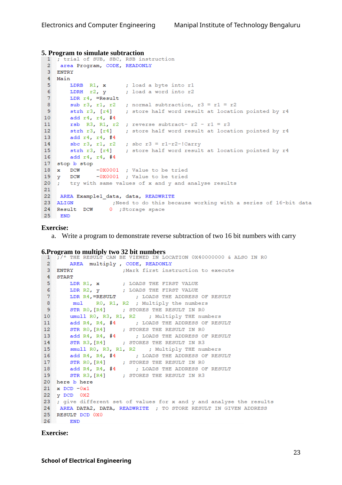

Copyable text transcription
OCR-generated from the original manual page. Check register names, labels, constants and punctuation against the reference image before using.
Electronics and Computer Engineering Manipal Institute of Technology Bengaluru
5. Program to simulate subtraction
1 ; trial of SUB, SBC, RSB instruction
2 area Program, CODE, READONLY
3 ENTRY
4 Main
5 LDRB Ril, x ; load a byte into rl
6 LDRH 12, y ; load a word into r2
7 LDR r4, =Result
8 sub r3, rl, r2 ; normal subtraction, r3 = rl = r2
9 strh r3, [r4] ; store half word result at location pointed by r4
10 add r4, r4, #4
11 rsb R3, Rl, r2 ; reverse subtract- r2 - rl = r3
12 strh r3, [r4] ; store half word result at location pointed by r4
13 add r4, r4, #4
14 sbe r3, rl, r2 3; sbe r3 = rl-r2-!Carry
15 strh r3, [r4] 3 store half word result at location pointed by r4
16 add r4, r4, #4
17. stop b stop
18 x Dcw -Ox0001 ; Value to be tried
as y Dcw -0x0001 ; Value to be tried
a; try with same values of x and y and analyse results
21
22 AREA Examplel data, data, READWRITE
23 ALIGN 7Need to do this because working with a series of 16-bit data
24 Result DCW 0 ;Storage space
25 END
Exercise:
a. Write a program to demonstrate reverse subtraction of two 16 bit numbers with carry
6.Program to multiply two 32 bit numbers
1 ;/* THE RESULT CAN BE VIEWED IN LOCATION 0xX40000000 & ALSO IN RO
2 AREA multiply , CODE, READONLY
3 ENTRY ;Mark first instruction to execute
4 START
= LDR Rl, x ; LOADS THE FIRST VALUE
6 LDR R2, y ; LOADS THE FIRST VALUE
7 LDR R4,=RESULT ; LOADS THE ADDRESS OF RESULT
8 mul RO, Rl, R2 ; Multiply the numbers
9 STR RO, [R4] ; STORES THE RESULT IN RO
10 umull RO, R3, Rl, R2 ; Multiply THE numbers
11 add R4, R4, #4 ; LOADS THE ADDRESS OF RESULT
12 STR RO, [R4] ; STORES THE RESULT IN RO
13 add R4, R4, #4 ; LOADS THE ADDRESS OF RESULT
14 STR R3, [R4] ; STORES THE RESULT IN R3
15 smull RO, R3, Rl, R2 ; Multiply THE numbers
16 add R4, R4, #4 ; LOADS THE ADDRESS OF RESULT
17 STR RO, [R4] ; STORES THE RESULT IN RO
18 add R4, R4, #4 ; LOADS THE ADDRESS OF RESULT
19 STR R3, [R4] ; STORES THE RESULT IN R3
20 here b here
21 »x DCD -Oxl
22 y DCD 0x2
23 ; give different set of values for x and y and analyse the results
24 AREA DATA2, DATA, READWRITE ; TO STORE RESULT IN GIVEN ADDRESS
25 RESULT DCD 0x0
26 END
Exercise:
23
School of Electrical EngineeringView original manual page (reference)
